Lunar Smart
Adaptive Habitat
WITH AI PSYCHOLOGICAL MONITORING FOR CREW MENTAL HEALTH
A home for four astronauts at the Moon's south pole that notices when someone is struggling, offers help instead of forcing it, and lets a human decide. One main dome, five modules, the LUNA AI and the seven LUNA-X devices.
Members
Jaineil R. · Angel C. · Farhan K.
School
PCTVS STEM Academy, Wayne, NJ
01 · The problem
Long missions challenge more than the body
On the Moon a crew of four lives for months in a space smaller than a house, 384,000 km from home, with a 1.3-second delay to Earth and no way to step outside for air. NASA's Human Research Program lists behavioral health and isolation among the key risks of exploration, and analog missions such as HERA, Mars-500 and CHAPEA keep showing the same pattern: stress builds slowly, sleep slips, and crews under-report how they feel.
6
crew conditions we track: anxiety, depression, conflict, fatigue, autonomy loss, monotony
4 crew
for 18-month missions; rubric maximum, the player counts as one
1.3 s
each-way delay to Earth: help has to live on board

Our Unreal simulation: a crew member awake at 03:00, heart rate up, sleep fragmented. Nobody on Earth would know for days.
Our question
How can a lunar habitat notice early that a crew member is struggling, and help, without becoming surveillance?
OBJECTIVES
- Detect early signs of the 6 conditions against each person's own baseline
- Respond first with the environment: light, sound, scent, schedule
- Offer, never force; a "no" always stops it
- Keep a human in charge of every serious decision
- Fit real mass, power and volume limits
WHAT SUCCESS LOOKS LIKE
- Problems caught days earlier than self-report
- Fewer sleep-disrupted nights and lower conflict
- Almost no unwanted alerts, so crews keep trusting it
- Crew members feel in control of their own data
02 · The solution
One habitat that looks after its crew
Project ARES is five layers that work as one system. The building protects the body, the AI watches over the mind, the devices carry that care onto the crew, and the rules keep it humane.
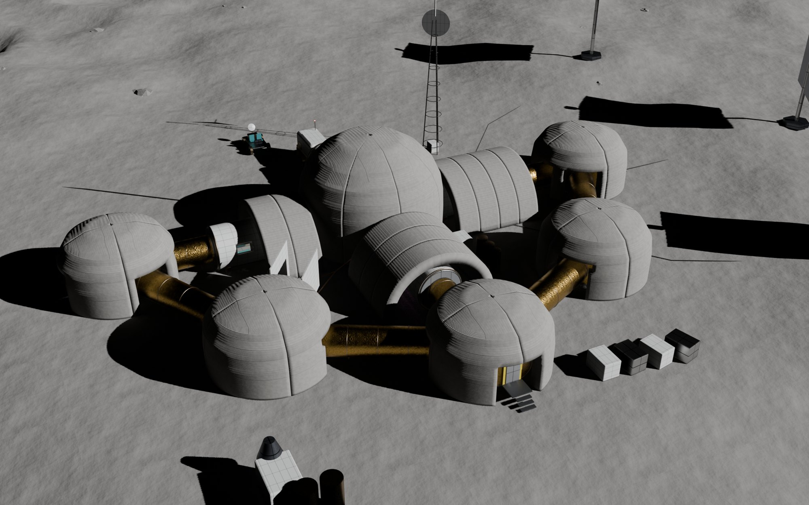
1 · Artemis Hub habitat
One main dome with an inflatable upper deck, four attached work modules and five node modules in a half circle, linked by a pressurised corridor and shielded with regolith.
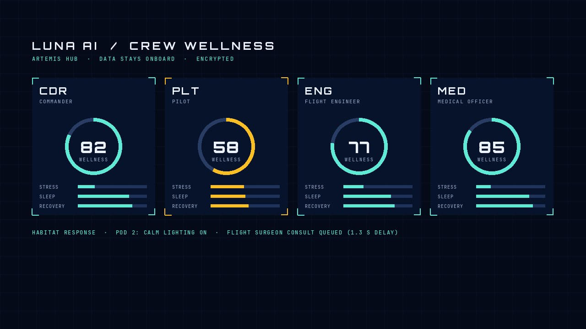
2 · LUNA crew-health AI
Nine sensors, six conditions, a personal 14-day baseline and a three-tier response: a quiet change, then an offer, then a human. Runs on board, no cloud.
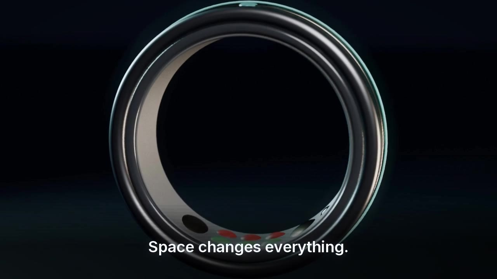
3 · LUNA-X devices
MindRing, LunaCore, LunaVision, LunaLens, LunaSense, LunaEar and LunaWall, plus the EVA helmet, glove, boot and suit. Each does one job and keeps raw data on itself.

4 · Adaptive environment
Light colour and brightness, soundscapes, scent, airflow and a second social space (Config B) are the AI's tools. Every change is reversible in seconds.
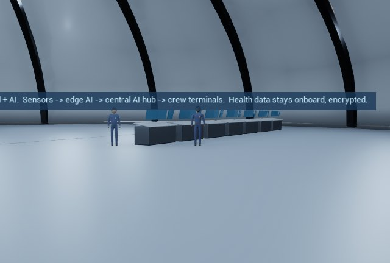
5 · Ethics built in
Eight hard limits in code: no sensors in private pods, no override of a refusal, the person is always told first, and a human reviews the system every week.
03 · The habitat
Artemis Hub: one dome, five modules
Our realistic base from the Unity game, rendered in Blender: the main dome at the centre, five node modules in a half circle joined by the gold corridor.
| Module | Why it matters for the crew |
|---|
| Main dome | Rigid lower deck (ECLSS, hygiene, storage) + inflatable upper deck with 4 private crew pods and the wardroom |
| Command / Comms | Mission work, Earth link with the real 1.3 s delay |
| Recreation / Commons | Games, films, second social space for Config B |
| Maintenance / Robotics | Repairs, 3D printing of spares, rover care |
| Hygiene 2 | Second hygiene unit so routines never collide |
| Medical / Storm shelter | Water-wall shielded refuge for solar particle events |
Site
Shackleton crater rim, 89.9° S: near-constant sunlight for power and access to ice in shadowed craters.
Space
About 740 m³ per crew member, 185 m³ of it private. Attached to the dome: airlock + suit room, lab, greenhouse, wellness gym.
Protection
Removable regolith cover against radiation and micrometeoroids; the storm shelter's water wall doubles as shielding.
Config A ↔ B
Normal layout, or a conflict layout with a second dining spot, acoustic screens and an alternate route. Switched only after crew consent.
04 · LUNA AI
Notices early. Offers, never forces.
Every reading is compared with the person's own 14-day baseline, never a population average. Each condition blends 4 to 6 sensors, so one noisy sensor can never trigger action alone.
| Sensor | Where | Feeds | Mass · power |
|---|
| Heart-rate variability | Comms beacon, wristband | 4 conditions | 0.12 kg · 0.2 W |
| Skin conductance | Chest beacon | Anxiety | 0.08 kg · 0.2 W |
| Sleep architecture | Wristband, night | 3 conditions | 0.12 kg · 0.2 W |
| Voice prosody (audio never stored) | Shared-zone mics | 6 conditions | 2.0 kg · 20 W |
| Facial action coding (no images kept) | Shared-zone cameras | 5 conditions | 2.45 kg · 28 W |
| Movement / proximity | UWB beacons, doors | 6 conditions | 4.2 kg · 33.6 W |
| Cortisol patch | Skin, 24–48 h | Depression | 0.04 kg · 0 W |
| CO₂ / air quality | Every zone, in pairs | Fatigue | 2.04 kg · 13.6 W |
| Task performance | Work terminals | 3 conditions | software only |
THREE-TIER RESPONSE
TIER 1
score ≥ 0.35
Silent, reversible changes to light, sound, temperature or scent. Not announced, but always written in the person's own log: silent is not secret.
TIER 2
score ≥ 0.55
A gentle offer in plain words, Yes or No. A "no" stops it at once and the AI waits 6 hours.
TIER 3
score ≥ 0.75
The person is told first, then the Chief Medical Officer (backup: Commander, then Mission Control). Humans take over.
Weak evidence can only lower a tier: sensor confidence under 50% or an overdue weekly human review caps the AI at Tier 1. During exercise and EVA, heart and skin signals count only 25%, so effort is never read as anxiety.
05 · LUNA-X
Seven devices. One connected crew.
LUNA-X carries the habitat's care out of the walls and onto the crew. Each device does one job well, keeps raw data on itself and shares only with consent. Specifications are design targets.

MINDRING
Wellness ring: ECG, PPG, skin conductance, temperature. Asks "Is this accurate?" before acting.

LUNACORE
Mission watch: timeline, wellness rings, habitat status; wrist tap and route arrow in emergencies.
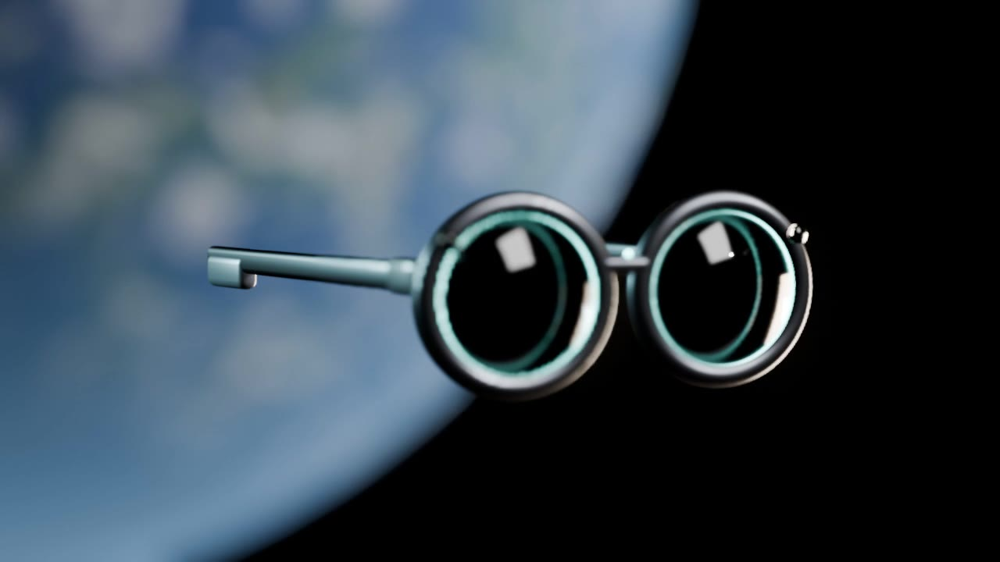
LUNAVISION
AR glasses: status beside the system you look at, hands-free checklists, EVA route home.

LUNALENS
Contact-lens concept for 2035+: suit oxygen and turnaround time at the edge of vision.
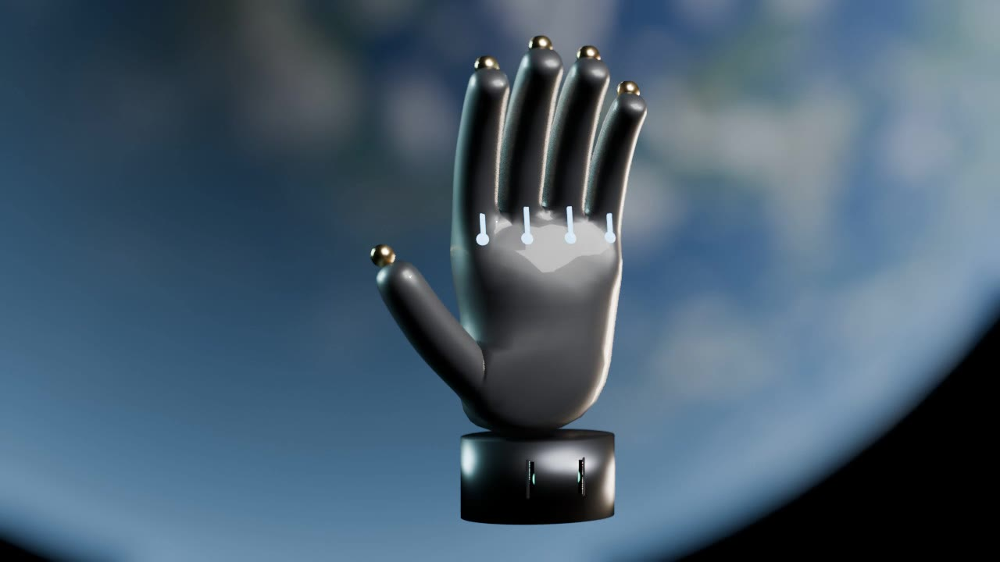
LUNASENSE
Gesture gloves: pinch, swipe, grab; tracks grip, dexterity and tremor over weeks.
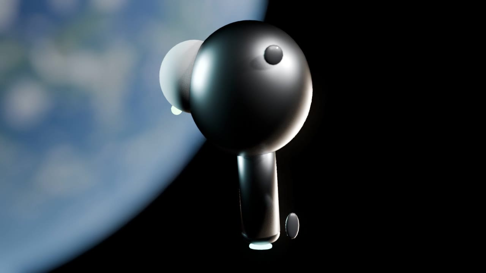
LUNAEAR
AI earbud: morning brief, guided breathing, EVA mode, directional shelter guidance.

LUNAWALL
Common-area display: crew board by consent, habitat twin, shelter coordinator. Senses presence, never identity.
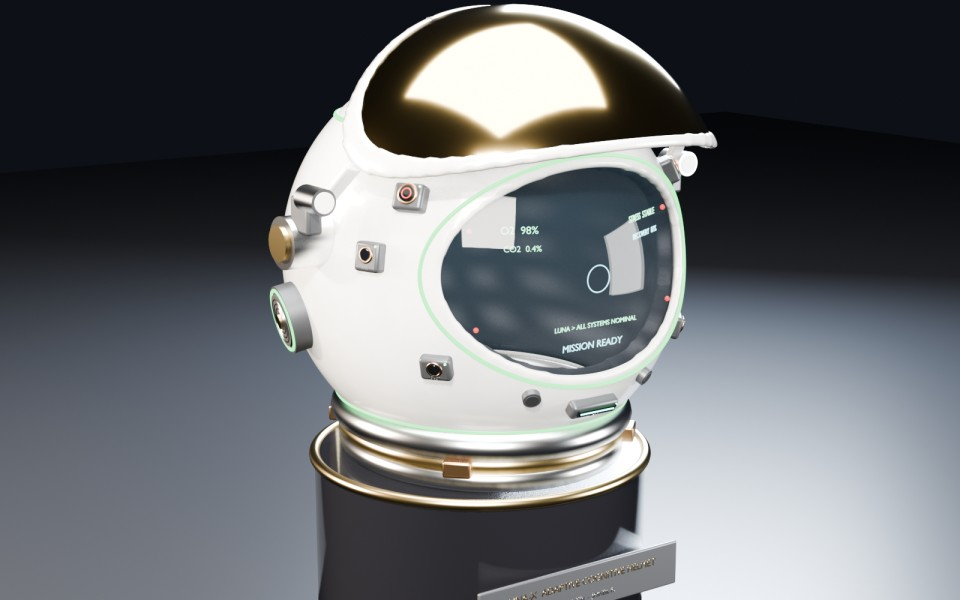
EVA HELMET
Cognitive helmet: vision, comms and environmental awareness on the surface.
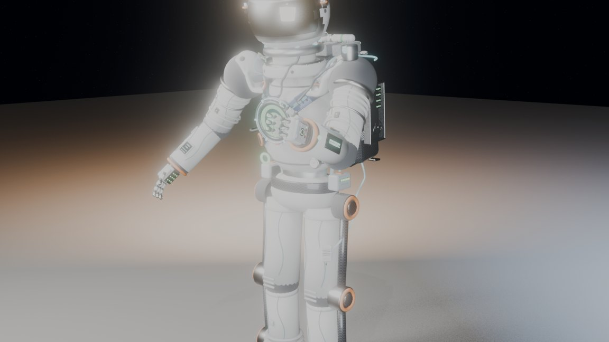
SMART SUIT · GLOVE · BOOT
XCore hub, life-support backpack, wellness glove and gait-sensing boot.
Solar particle event: everything works as one
LunaCore taps the wrist · LunaEar speaks the route from the shelter's direction · LunaVision draws the blue path · LunaWall counts the crew in · the storm shelter's water wall does the shielding.
06 · Ethics & limits
Trust is the design requirement
On an 18-month mission nobody can walk away from the system. Our 1,155-word D4 ethics report works through four tensions, and every tension became a built feature.
| Tension | What we built |
|---|
| Surveillance vs privacy | No cameras or microphones in pods; wearables replace room sensors there |
| Autonomy vs intervention | Tier 2 is always an offer; a "no" starts a 6-hour cooldown |
| Transparency vs distraction | Tier 1 is silent but always logged for the person to read |
| Individual vs crew | Config B separates people without saying who is in conflict |
EIGHT HARD LIMITS, ENFORCED IN CODE
- Never share one person's mental-health data with another crew member without consent.
- Never override a refusal; only a human (the CMO) may follow up.
- Never touch medication, medical protocols or life support (air, hatches, power).
- Never alert Mission Control about someone before that person is told.
- Only reversible, crew-overridable changes: light, sound, temperature within 2 °C, scent, schedule offers.
- No cameras or microphones in pods, bathrooms, the VR retreat or the family-call booth.
- A human reviews the system at least every 7 days, or the AI drops to Tier 1.
- Public indicators never show anyone's mood unless they choose to share it.
One-tap OFF
Any crew member can switch the AI off at any time.
Pause & opt out
Pause monitoring 72 h, opt out of any sensor, say "that reading is wrong".
Own your data
30-day retention; export or delete your log whenever you like.
07 · Testing & results
What we tested, and what it showed
We tested in simulation: 70 simulated missions in our Unity and Unreal habitats, a 72-hour tabletop run, and machine-learning models trained on public mental-health text data. These are simulations, not human trials.
60/60
real problems caught across 70 simulated missions
0.02
unwanted offers per person per week
11.1 kg
installed sensor mass, 96 W total power
0.83
accuracy of our best model (Random Forest)
| Model | Accuracy · F1 |
|---|
| Random Forest | 0.83 · 0.83 |
| Same model, perturbed inputs | 0.54 · 0.53 |
The sharp drop under perturbed inputs is why LUNA never acts on one signal: it needs several sensors to agree, a persistent trend and a personal baseline before it moves past a silent Tier-1 change.
72-hour tabletop
Two conditions at once, a failed sensor and the CMO out on EVA. The backup chain (Commander, then Mission Control) took over and a full report was saved.
Graceful degradation
Break a sensor live: its weight is removed, confidence drops, and the AI caps itself at Tier 1. Life-safety alarms never depend on the psych AI.
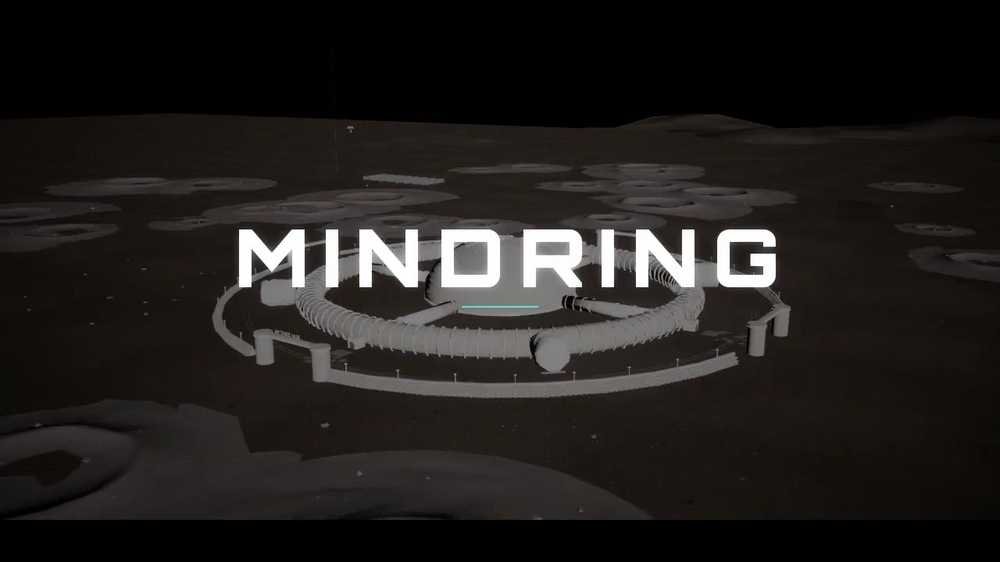
FUTURE WORK
- Test MindRing and LunaCore prototypes with volunteers in an analog habitat, with ethics approval
- Retrain models on consented physiological data, not only text
- Measure the corridor light-and-sound transitions as a real effect, not a hypothesis
- Scale the layout to 6 crew and longer surface stays
08 · Rubric coverage
Every requirement, met and shown
Our self-assessment against the Project ARES rubric (the official score comes from the review board). Every line can be checked live in our games and files.
| Project ARES rubric | Pts | Where it's met |
|---|
| Sensor architecture & detection | 35/35 | 9 sensors × 6 conditions, weights, 14-day baselines, failure modes, mass & power (p. 5) |
| Habitat spatial design | 35/35 | Every zone with a mental-health purpose, no pod sensors, Config A/B, scaled floor plans (p. 4) |
| AI response protocols | 50/50 | Flowcharts for all 6 conditions, 3 tiers at 0.35/0.55/0.75, evidence for every intervention (p. 5) |
| Ethics & limits | 40/40 | D4 report, 4 tensions, 8 hard limits in code, human override (p. 7) |
| Presentation & communication | 25/25 | 15-minute run-of-show, original visuals, films, board questions Q1–Q6 live |
| Individual reflection journals | 15/15 | Written separately by each member, weeks 2, 5 and 8 |
| Bonus A · tabletop simulation | +10 | 72-hour run with a failed sensor and the CMO on EVA (p. 8) |
| Bonus B · crew interface | +10 | Working crew screen: own data, what the AI did, pause, opt out, export, delete |
| NASA HUNCH design areas | Our evidence |
|---|
| Real need | Behavioral health is a NASA Human Research Program risk (p. 2) |
| Research | Analog missions, ISS lighting and CO₂ data, our research paper and models |
| Design & innovation | Half-circle Artemis Hub, LUNA AI, seven LUNA-X devices (pp. 3–6) |
| Prototype | Blender CAD, 3D-print kit, Unity and Unreal simulators, Arduino circuits |
| Testing | 70 simulated missions, model accuracy, tabletop run (p. 8) |
| Feasibility | Mass, power and volume budgets; NASA-style limits and maintenance |
| Communication | Website, films, posters, presentation and this brochure |
The NASA HUNCH rows follow the general areas HUNCH design projects are judged on; check them against your official HUNCH scoring sheet.
09 · See it yourself
Full power: play it, watch it, print it
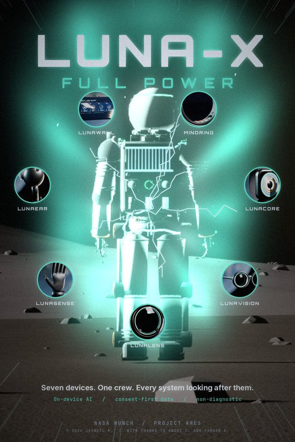
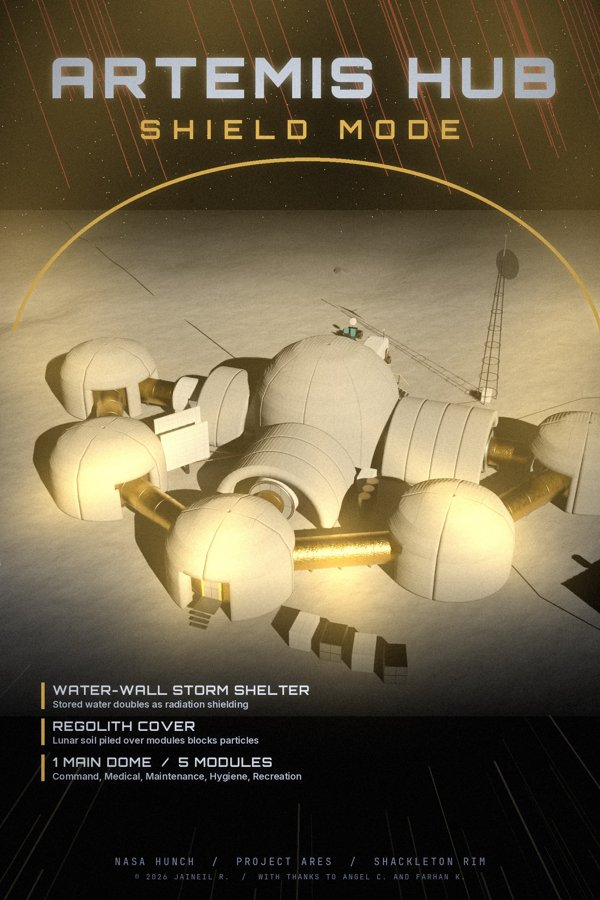
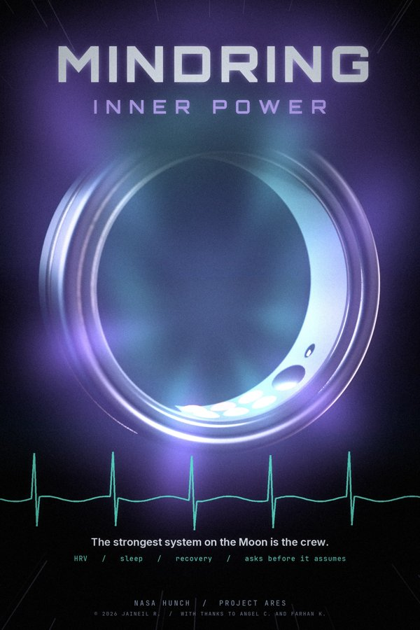
Our original poster series and the 20-second LUNA-X Full Power film (original orchestral score), plus a launch film and mission trailer for every device.

WEBSITEGames, models, papers

LUNA-XAll 7 devices, films, 3D

FULL POWERFilm + posters

GITHUBSource, CAD, print kits
RUBRICEvidence for every line
HABITAT FILMThe story in the base
THE TEAM
Jaineil R. · Project manager, lead designer, programmer
Angel C. · Team member
Farhan K. · Team member
Mrs. Anjali Wahi · Advisor, awahi@pcti.tec.nj.us
SOURCES
NASA Human Research Program risk reports · ISS Solid-State Lighting studies · HERA, Mars-500, HI-SEAS and CHAPEA analog findings · Kaplan, Attention Restoration Theory · our research paper "Lunar Smart Adaptive Habitat Design with AI Psychological Monitoring" and D1–D4 deliverables.
NASA HUNCH student design project. All renders, films and screenshots are our own Blender, Unity and Unreal Engine work. © 2026 Jaineil R., with thanks to Angel C. and Farhan K.